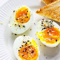

Home
Boiled Egg

Description
Perfect boiled eggs depend entirely on precision timing and an immediate
ice bath. Lowering cold eggs directly into boiling water shocks the egg
whites, making peeling effortless. Adjusting the timer by just a minute or
two easily customizes the yolk from a liquid center to a dense, creamy
texture.
Ingredients
- large egss
- 1 table spoon salt
- water
- ice cubes
Steps
-
Boil the water: Fill a pot with enough water to fully cover the eggs and
bring it to a rolling boil.
-
Add the eggs: Lower cold eggs gently into the boiling water using a
spoon to prevent cracking.
-
Simmer and time: Lower the heat slightly to a gentle boil and set a
timer for 6 minutes (soft-boiled), 8 minutes (jammy), or 10 to 12
minutes (hard-boiled).
-
Chill in ice: Immediately transfer the cooked eggs into a bowl filled
with ice water for 3 to 5 minutes.
-
Peel and serve: Tap the egg gently on a hard surface to crack the shell,
then peel starting from the wider bottom end.